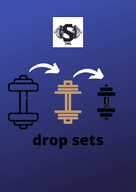

المقدمة.
هل تريد إضافة بعض التنوع إلى روتين بناء العضلات الخاص بك؟ يمكنك فقط الذهاب بعيدًا بنفس المجموعات الثلاث القديمة المكونة من عشرة. وهم مملون مثل مشاهدة الطلاء وهو يجف. drop sets وsuper sets هي استراتيجيات تدريب عالية الكثافة يستخدمها رافعو جميع المستويات لتحفيز نمو عضلات جديدة وتقديم التنوع في التدريبات الخاصة بهم. drop sets هي عندما تقوم بمجموعة على الفشل ، ثم قم بتقليل الحمل والتدريب إلى الفشل في نفس التمرين مرة أخرى. super sets هي عندما تقوم بتمرينين متتاليين وتأخذ استراحة فقط بعد التمرين الثاني. في حين أنه من الضروري معرفة الاختلافات بين drop sets وsuper sets على مستوى السطح ، فمن الضروري أيضًا معرفة كيف تؤثر كل طريقة تدريب على نمو العضلات وأي استراتيجية مناسبة لك.
ما هي drop sets وكيف تعمل؟
drop sets هي استراتيجية يستخدمها رياضيون اللياقة البدنية ، وكمال الأجسام ، حيث يتم تنفيذ المجموعة حتى الفشل ، ثم يتم تقليل الحمل وتكرار التمرين حتى الفشل . لخلق المزيد من الإرهاق ، يمكن استخدام drop sets داخل مجموعة drop set.
مزايا مجموعات drop set.
نتيجة لزيادة الإرهاق ، هناك زيادة في إجهاد التمثيل الغذائي. زيادة الحجم يتم قطع وقت التدريب إلى النصف.
لإجهاد الأيضي هو عامل حاسم في نمو العضلات. إنه في الأساس تراكم المنتجات الثانوية من إنتاج الطاقة أثناء الرفع. عندما تقوم بمجموعة صعبة ، فأنت تعتمد على نظام الطاقة اللاهوائي اللاكتيكي لتوصيل الطاقة اللازمة للحفاظ على شدة التمرين. نتيجة لذلك ، تتراكم المنتجات الثانوية الأيضية ، مما يشير إلى استجابة النمو. كما أنه يسبب الإرهاق لأن البيئة داخل العضلات تصبح شديدة الحموضة ، مما يمنع تقلص العضلات وبالتالي يجبر على الإنتاج. تعمل مجموعات drop sets على تعزيز الإجهاد الأيضي عن طريق دفع الإرهاق إلى المستوى التالي والسماح لك بإنجاز المزيد من التكرارات بعد الفشل عن طريق خفض الحمل. عادةً ما يكون حجم (volume)أكبر مشابهًا لمزيد من التكرارات في الفشل الماضي مقارنة ببرنامج تدريب القوة التقليدي. نظرًا لوجود علاقة بين الجرعة والاستجابة بين الحجم(volume) ونمو العضلات ، فإننا نعلم أن الحجم (volume)محرك مهم للتضخم. كلما زاد الحجم(volume) الذي تحققه (والذي يتم تحديده عادةً على أنه عدد المجموعات لكل مجموعة عضلية في الأسبوع) ، زاد نمو العضلات الذي ستحفزه. يمكن تحديد الحجم (volume)باستخدام المجموعات x التكرارات x الأوزان. عند مقارنتها بهيكل المجموعة القياسي ، ستعمل مجموعة drop set على زيادة حمل الحجم من خلال السماح لك بتنفيذ المزيد من التكرارات في مجموعة. يتم تحقيق هذا الحجم الإضافي أيضًا في فترات التدريب التي تقارب نصف ما يمكن أن يكون عليه تدريب القوة التقليدي ، مما يوفر لك الوقت أو يسمح لك بزيادة نمو العضلات إلى أقصى حد عندما يكون لديك وقت قصير.
هل يمكن القيام ب drop set في كل تمرين؟
قد تكون قادرًا على الابتعاد عن القيام بمجموعة drop set في كل جلسة إذا كنت تقوم بنظام push, pull, leg. تحصل على فترة راحة كافية بين الجلسات لأنك تقوم بتدريب كل مجموعة عضلية لمدة يومين على الأقل. من ناحية أخرى ، قد تتسبب مجموعات drop sets على الأوزان الثقيلة مثل تمارين البنش والقرفصاء في معاناتك ، ولن تكون فكرة جيدة أن تقوم بمجموعات drop sets مع هذه التمارين في كل مرة. لن تؤدي تمارين العزلة مثل تمرينات العضلة ذات الرأسين إلى إبطاء عملية التعافي مثل تلك التمرينات الثقيلة. يعد استخدام مجموعات drop sets على مراحل طريقة أفضل لبرمجتها. على سبيل المثال ، قد يكون لديك من 2 إلى 4 أسابيع مخصصة لمجموعات drop sets كطريقة أساسية لإرهاق عضلاتك. بعد ذلك ، يمكنك تجربة أساليب مختلفة مثل أو المجموعات super sets. ستقوم فقط بفترات وجيزة من التدريب ، مما يزيد من حجم وشدة تمارينك.
هل مجموعات Drop set فكرة جيدة؟
الزيادة في الإجهاد الأيضي والإرهاق وحجم التدريب ، كما هو مذكور في قسم المزايا ، هو ما يجعل مجموعات drop sets ناجحة جدًا. حتى عند موازنة الحجم بين مجموعة drop sets ومجموعات المجموعة super sets ، قد يكون لمحددو drop sets اكتساب عضلي أفضل. عندما تم معادلة الحجم ، نتج عن مجموعات drop sets زيادة بنسبة 18 في المائة في نمو العضلات مقارنة بزيادة قدرها 4 في المائة في المجموعة العادية. من ناحية أخرى ، نفذت تقنية مجموعة drop sets حمولة حجم أكبر بكثير من المجموعة حسب نهج المجموعة (المجموعات × التكرارات × الحمل). علاوة على ذلك ، أظهرت العديد من الدراسات عدم وجود فرق بين المجموعات ذات الحجم المعادل. أظهرت مجموعات drop sets تضخمًا مشابهًا عند مقارنتها بمجموعات الأحمال المنخفضة أو الثقيلة ، على الرغم من أن مجموعة الحمل الخفيف تؤدي حجمًا أكبر. أخيرًا ، عند إضافة مجموعة drop sets إلى تدريبات القوة التقليدية ، يرتفع حجم العضلات أكثر من تدريبات القوة التقليدية.